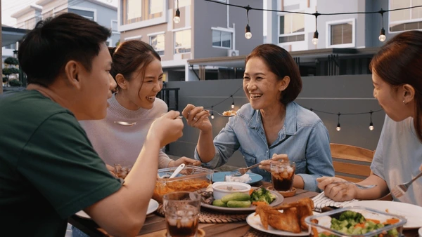

Welcome to
Golden Dragon Lalor
Recommended Dishes

Peking Duck
$17
Sweet and Sour Pork
$21Crispy Roast Pork
$23About Us
Started in 2001, we are a small business that wanted to spread our Chinese and Vietnamese culture to others in Australia. Growing up, there were not many opportunities for us to enjoy these native dishes, so, with this restaurant, we are able to make some avoid being homesick, as well as introduce the cuisine to all Australians who visit us!
Contact Us
Address: 18 May Rd, Lalor VIC 3075
Phone: 0402 508 619
Email: goldendg@gmail.com